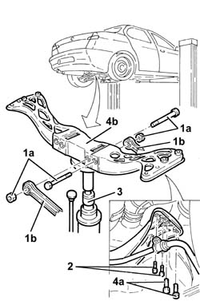

4420D42 rear suspension beam - r r
- Path
- Procedures > 44 SUSPENSION AND WHEELS > 4420 REAR SUSPENSION > 4420D rear suspension axle/crossbeam > 4420D42 rear suspension beam - r r
- Kind
- repair procedure (removal / refitting; the operation number is the code)
- Applies to
- all engines; all production periods
- Interactive page
- https://sloeber94.github.io/elrnDB-a156/en/#/3238213
Applies to: all engines; all production periods
 Removing
Removing
 Refitting
RefittingPosition the vehicle on the ramp.
Raise the vehicle.
1. Undo the bolts (1a) and disconnect the suspension rams (1b) from the rear suspension crossmember.
2. Undo the bolts securing the anti-roll bar to the rear suspension crossmember.
3. Position a hydraulic jack under the rear suspension crossmember.
4. Undo the bolts (4a) and remove the rear suspension crossmember (4b) using the hydraulic jack.

Applies to: all engines; all production periods
Refitting
RemovingPlace the rear suspension crossmember back in its housing using the hydraulic jack and fix it tightening the bolts to the recommended torque.
 | Fastening | Component | Ø | Value (daNm) |
|---|---|---|---|---|
- | Bolt | REAR CROSS-BEAM | M10 | 6.2 - 6.8 |
Remove the hydraulic jack from under the rear suspension crossmember.
Tighten the bolts securing the anti-roll bar to the rear suspension crossmember to the recommended torque.
| Fastening | Component | Ø | Value (daNm) |
|---|---|---|---|---|
- | Bolt | REAR ANTI-ROLL BAR | M6 | 0.7 - 0.8 |
Connect the track control arms to the rear suspension crossmember and secure them tightening the bolts to torque.
| Fastening | Component | Ø | Value (daNm) |
|---|---|---|---|---|
- | Bolt | REAR WISHBONE | M12 | 11.7 - 12.9 |
Lower the vehicle.
Remove the vehicle from the ramp.
Check and, if necessary, adjust the wheel geometry 4450A40 rear wheel geometry - check using optical equipment .